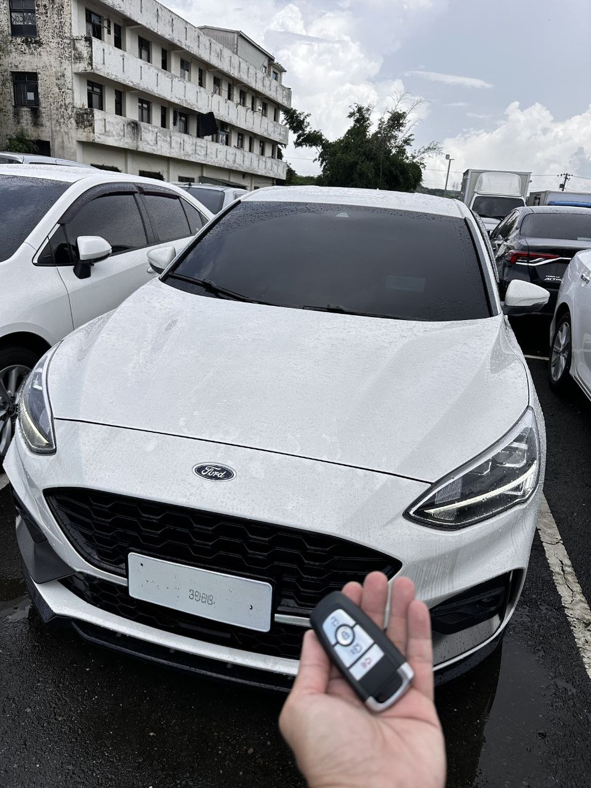
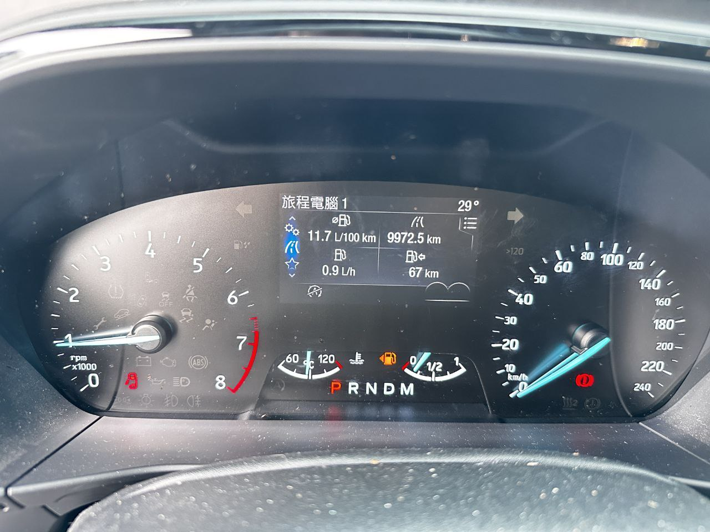

現場實拍：南投埔里 Focus Mk4 鑰匙全丟，現場快速配製全新智能鑰匙
國民鋼砲的防盜關卡：Ford Focus Mk4 數據匹配
Ford Focus Mk4 (2019-2020) 採用了新一代的加密系統，當鑰匙全數遺失時，車輛會完全鎖定無法啟動。傳統鎖匠若無對應的新款軟體，往往束手無策。

技術紀錄：儀表燈號全亮，工程師正透過 OBD 介面進行防盜數據重構
極致核心：深入埔里山城，24H 現場解碼
本次任務遠征南投埔里，車主因疏忽遺失了唯一的感應鑰匙。極致核心團隊抵達後，利用最新型行動解碼工作站，直接與車輛系統進行通訊。
我們在不拆卸任何內裝、不影響原廠保固的前提下，成功清除舊有遺失數據並寫入全新智能鑰匙。從開鎖、數據計算到晶片匹配，在現場約 1 小時內即刻完工，讓車主免於昂貴的拖吊負擔。
Focus Mk4 專門技術
支援最新年式 Focus/Kuga 智能鑰匙全丟救援，數據穩定不跳碼。
南投跨區遠征
埔里、魚池、草屯、南投市 24H 快速預約，專業技師準時抵達。